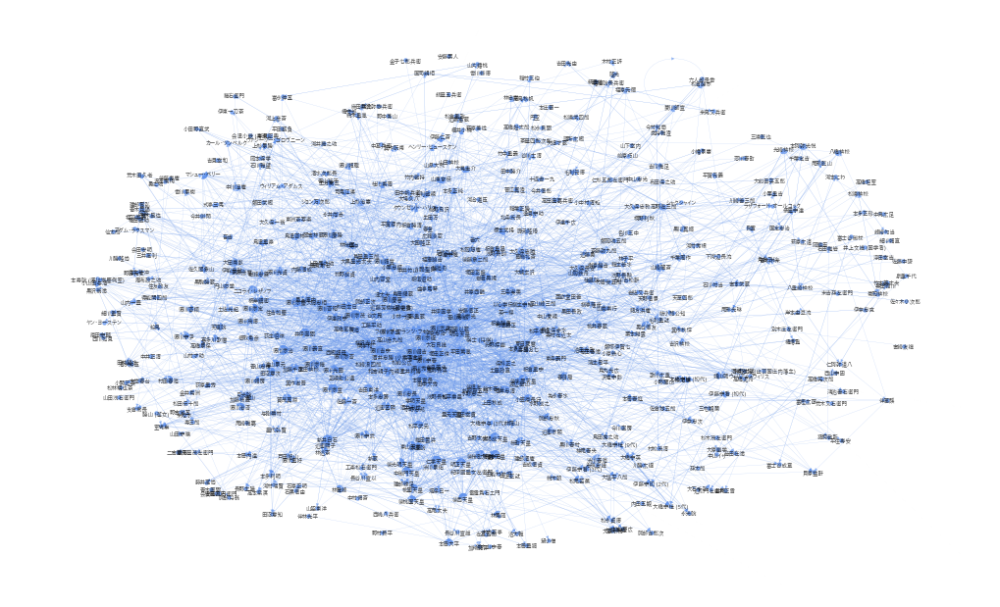

import wikipedia
import networkx as nx
from tqdm import tqdm
BLACK_LIST = [
'江戸時代',
'幕末の人物一覧',
'明治の人物一覧',
'安土桃山時代の人物一覧',
'江戸時代の人物',
'歴史上の人物一覧',
'徳川将軍一覧',
'将棋棋士',
'浮世絵師一覧',
'儒学者一覧',
'江戸時代の囲碁棋士一覧'
]
wikipedia.set_lang("ja")
%matplotlib inline
people_list_page = wikipedia.page("江戸時代の人物一覧")
G = nx.DiGraph()
for person in people_list_page.links:
if person not in BLACK_LIST:
G.add_node(person)
G.number_of_nodes()
659
for person_from in tqdm(G.nodes):
try:
person_page = wikipedia.page(person_from)
if person_page.title == person_from:
for person_to in person_page.links:
if person_to in list(G.nodes):
G.add_edge(person_from, person_to)
except:
pass
non_neighbors = []
for node in G.nodes:
if len(list(G.neighbors(node))) == 0:
non_neighbors.append(node)
for node in non_neighbors:
G.remove_node(node)
23%|█████████████▋ | 150/659 [06:31<23:45, 2.80s/it]/Users/yamamoto/.anyenv/envs/pyenv/versions/3.11.7/lib/python3.11/site-packages/wikipedia/wikipedia.py:389: GuessedAtParserWarning: No parser was explicitly specified, so I'm using the best available HTML parser for this system ("html.parser"). This usually isn't a problem, but if you run this code on another system, or in a different virtual environment, it may use a different parser and behave differently.
The code that caused this warning is on line 389 of the file /Users/yamamoto/.anyenv/envs/pyenv/versions/3.11.7/lib/python3.11/site-packages/wikipedia/wikipedia.py. To get rid of this warning, pass the additional argument 'features="html.parser"' to the BeautifulSoup constructor.
lis = BeautifulSoup(html).find_all('li')
100%|████████████████████████████████████████████████████████████| 659/659 [29:06<00:00, 2.65s/it]
DRAW_CONFIG = {
'node_size': 5,
'arrowsize': 5,
'font_size': 4,
'with_labels': True,
'node_color': 'cornflowerblue',
'alpha': 0.7,
'edge_color': 'cornflowerblue',
'width': 0.10,
'font_family': 'IPAPGothic'
}
import matplotlib.pyplot as plt
plt.figure(figsize=(10,6))
pos = nx.spring_layout(G, iterations=50, seed=1234, k=0.5)
nx.draw(G, pos, **DRAW_CONFIG)
plt.show()

plt.savefig('edo_people_graph.pdf')
<Figure size 640x480 with 0 Axes>
non_neighbors = []
for node in G.nodes:
if len(list(G.neighbors(node))) == 0:
non_neighbors.append(node)
non_neighbors
[]
for node in non_neighbors:
G.remove_node(node)
delete_neighbors = []
for node in G.nodes:
if node.endswith('藩'):
delete_neighbors.append(node)
for node in delete_neighbors:
G.remove_node(node)
nx.write_gml(G, "edo.gml")
G_edo = nx.read_gml("edo.gml")
plt.figure(figsize=(10,6))
pos = nx.spring_layout(G_edo, iterations=50, seed=1234, k=0.5)
nx.draw(G, pos, **DRAW_CONFIG)
plt.show()
sorted(nx.pagerank(G_edo).items(), key=lambda x:-x[1])[:30]
[('徳川家康', 0.018839762302814107),
('徳川秀忠', 0.014647218544087416),
('徳川家光', 0.014047416609427236),
('徳川家斉', 0.012598052079051706),
('本居宣長', 0.011830566523394653),
('徳川吉宗', 0.011773042353908645),
('徳川綱吉', 0.011379371758192062),
('徳川家綱', 0.011171561521555138),
('徳川慶喜', 0.011138666353330481),
('徳川家茂', 0.010507868445224694),
('徳川家慶', 0.009884146816649652),
('松平定信', 0.009392933122066285),
('徳川家宣', 0.008896610471324763),
('徳川家治', 0.008604448734614417),
('徳川家定', 0.008493599171781604),
('明治天皇', 0.007086237830509613),
('徳川家重', 0.007052635452644552),
('後水尾天皇', 0.006904194401312377),
('徳川家継', 0.006611535953116792),
('勝海舟', 0.0064994578679011105),
('孝明天皇', 0.0060884018726106515),
('新井白石', 0.005977341340214977),
('土井利勝', 0.0059182449246124634),
('井伊直弼', 0.005901239051554294),
('水野忠邦', 0.005813149832871907),
('霊元天皇', 0.005774414315342403),
('徳川光圀', 0.005711989954209582),
('徳川斉昭', 0.005482055689677943),
('後陽成天皇', 0.005434813926403158),
('堀田正俊', 0.005354027523454542)]
import networkx as nx
import numpy as np
from sklearn.preprocessing import normalize
def calc_pagerank(G, beta=0.85, iteration_num=50):
n = G.number_of_nodes()
# 隣接行列
A = nx.adjacency_matrix(G).toarray()
# 遷移確率行列
M = normalize(A, norm='l1', axis=1)
# PageRankベクトル
p = np.ones(n).reshape(-1, 1)
p = normalize(p, norm='l1', axis=0)
# Random jumpベクトル
e = np.ones(n).reshape(-1, 1)
for step in range(iteration_num):
p = beta * np.dot(M.T, p) + (1-beta) * (e / n)
return p
pageranks = {}
for person, score in zip(people, calc_pagerank(G_edo)):
pageranks[person] = score[0]
sorted(pageranks.items(), key=lambda x:-x[1])[:30]
[('徳川家康', 0.018717507759849095),
('徳川秀忠', 0.01455742795322764),
('徳川家光', 0.013960865001442295),
('徳川家斉', 0.012509016001588505),
('本居宣長', 0.011705666052740333),
('徳川吉宗', 0.01169127739357204),
('徳川綱吉', 0.011302898947037567),
('徳川家綱', 0.011098804357044922),
('徳川慶喜', 0.011065180185012635),
('徳川家茂', 0.010439886713430414),
('徳川家慶', 0.00981860403026313),
('松平定信', 0.00931458036897358),
('徳川家宣', 0.008837953660943747),
('徳川家治', 0.008545116627264615),
('徳川家定', 0.008438889308184367),
('明治天皇', 0.0070402549216494106),
('徳川家重', 0.007005718096682622),
('後水尾天皇', 0.006862155504486114),
('徳川家継', 0.00656917456602094),
('勝海舟', 0.00645302746825646),
('孝明天皇', 0.006050733456546246),
('新井白石', 0.005935983961998691),
('土井利勝', 0.005881638253727899),
('井伊直弼', 0.005862736785553474),
('水野忠邦', 0.005772387845999136),
('霊元天皇', 0.00573835814270758),
('徳川光圀', 0.005673326415088187),
('徳川斉昭', 0.0054427813018573246),
('後陽成天皇', 0.005403038916627659),
('堀田正俊', 0.005319952960442238)]